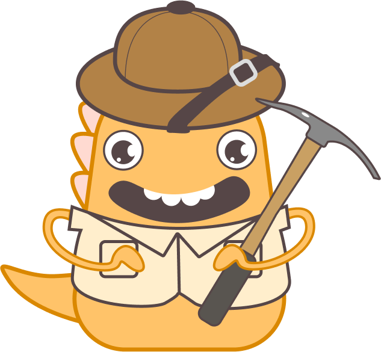

시작
머리
목
다리
몸통
꼬리
나는 무엇일까요?
퀴즈
이 녀석 이름은 무엇일까요?
다음
 머리뼈에는 많은 구멍이
있어서 머리가 가벼웠어요.
다음
길이 22m, 키12m로,
용각류 중에서도 큰 편에 속해요.
다음
앞다리가 뒷다리보다 훨씬 길어서
"팔이 긴 도마뱀"이라는 뜻의 이름을 가지게 되었어요.
다음
고대 식물들은 소화하기 힘들어서,
소화기관의 길이는 100미터가 넘어야 했어요.
위에 있는 작은 돌들은 서로
부딪히면서 음식을 작게 잘라주었어요.
다음
꼬리 길이가 다른 목이 긴 공룡들에 비해
상대적으로 짧았어요.
다음
나의 이름은
무엇일까요?
나는 누구일까요?
프테라노돈
알로사우루스
파키케팔로사우루스
브라키오사우루스
훌륭해요!
 길이 22m, 키12m로,
길이 22m, 키12m로,